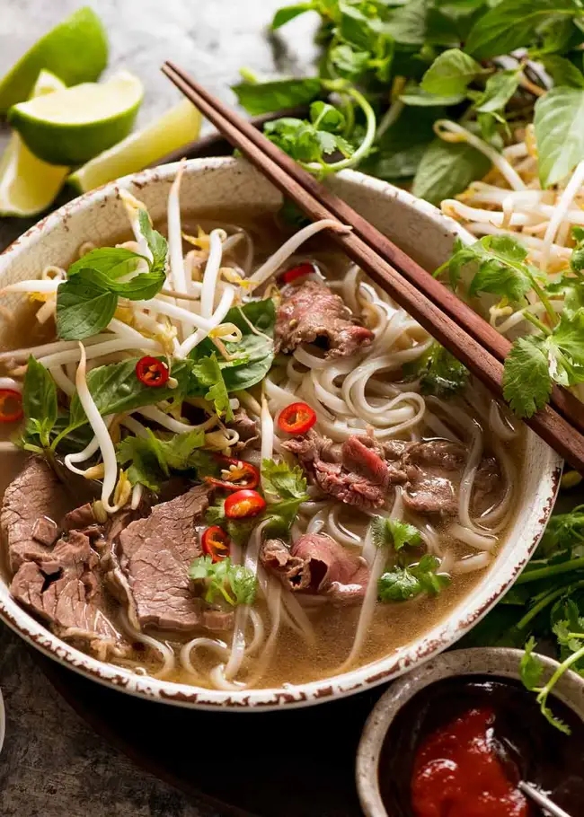

Pho

Experience the Magic of Pho
Made from scratch with the signature broth that’s light yet at the same time so full of
flavour, it’s infused with spices like cinnamon, star anise and cardamom. The soup is utterly
addictive and every spoonful leaves you wanting more!
If you’re wondering “What is Pho?” then you’re probably also wondering “Why is she so bonkers
over it???” I don’t blame you. It looks like a relatively harmless bowl of beef noodle soup.
That is, until you take your first slurp. The Pho soup broth is everything. It’s light yet
full of flavour, deceptively beefy, savoury, complex, has the tiniest hint of richness and is
filled with beautiful spices like cinnamon. It is, without question, one of The Best Soups in
the whole world!
Ingredients
Aromatics
- 2 large onions
- 150g / 5oz ginger
Spices
- 10 star anise
- 4 cinnamon quills
- 4 cardamon pods
- 3 cloves
- 1.5 tbsp corinader seeds
Beef Bones
- 3lb beef brisket
- 2lb meaty beef bones
- 2lb marrow bones
Seasoning
- 2 tbsp white sugar
- 1 tbsp salt
- 3 tbsp fish sauce
Noodle Soup (per bowl)
- 1.5 oz dried rice sticks
- 1 oz beef tenderloin, raw, thinly sliced
- 3-5 brisket slices
Toppings
- beansprouts
- thai basil
- coriander/cilantro
- lime wedges
- sliced red chilli
- hoisin sauce
- siracha
Steps
-
Aromatics
- Heat a heavy based skillet over high heat (no oil) until smoking.
-
Place onion and ginger in pan cut side down. Cook for a few minutes until it's charred,
then turn. Remove and set aside.
- Toast Spices lightly in a dry skillet over medium high heat for 3 minutes.
-
Remove Impurities
- Rinse bones & brisket then cover with water in large stock pot.
- Boil for 5 minutes, then drain.
- Rinse each bone and brisket under tap water.
-
Broth
- Wipe pot clean, bring 3.5 litres / 3.75 quarts water to boil.
- Add bones and brisket, onion, ginger, Spices
-
Add onion, ginger, Spices, sugar and salt - water should just barely cover everything.
- Cover with lid, simmer 3 hours.
- Remove brisket (should be fall-apart tender), cool then refrigerate for later.
- Simmer remaining soup UNCOVERED for 40 minutes.
-
Strain broth into another pot, discard bones and spices. Should be about 2.5 litres /
2.65 quarts (10 cups), if loads more, reduce.
-
Add fish sauce, adjust salt and sugar if needed. Broth should be beefy, fragrant with
spices, savoury and barely sweet.
-
Assemble
- Prepare rice noodles per packet, just prior to serving.
- Place noodles in bowl. Top with raw beef and brisket.
- Ladle over about 400 / 14 oz hot broth - will cook beef to medium rare.
- Serve with Toppings on the side!